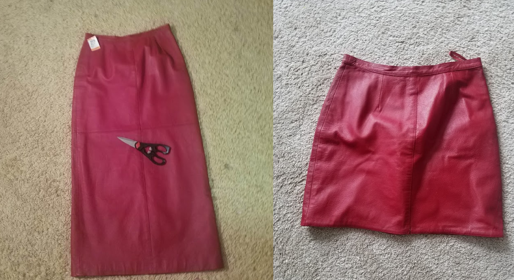

An introduction
July 17th, 2018

Well the time has come that I finally responded to those two requests for a blog. I suppose my daily rants on my finsta were just not enough. But fear not! I never back down from a challenge, and this will be quite fun for me anyway. Not to mention that this is not my first experience with blogging. To this day, all Analog Devices employees are fully capable of cringing at my bad jokes on the blog I started for the robotics interns last year. I was even recognized in the hall once for it. The fame did not, however, go to my head, and though I now only do autographs by special requests to control the onslaught of my millions of adoring fans, this blog will be 100% authentic Emily Satterfield. On occasion, this will mean I will go on swirling tangents amidst an existential crisis, but it will also include reflections on daily life, how I handle being a hot mess, my adventures to far away lands, and maybe even some recipes if I am feeling inspired. The first few posts I write will be based on prompts that were provided in an application to be an MIT blogger. If, by chance, the person who is evaluating that application is reading this right now, you look lovely today:) Just kidding. But in all seriousness, I truly do want to tell my story on the MIT admissions blog too, so hopefully that works out.
I wanted to come up with a more clever way to write my first ever blog post - perhaps a pun in the title, or a fun little anecdote - but if I’m telling the truth I have been sitting in my cubicle for about 4 hours now, and the tan walls and silence didn’t really bring me any inspiration. A picture of my new puppy will have to suffice.
MIT BLOGGER APPLICATION BLOGS:
What Happened Tuesday?
July 17th, 2018
Though it’s summer and one might expect my summer Tuesdays to be a thrilling adventure, my Tuesday started out like most of the rest of my days. This is not to say there isn’t meaning to be found in a routine - I guess you just need to pay a little more attention and look a little deeper. I’m going to stop there though, because any good allegory needs a little bit of plot first. I’m not gonna give away this particular Tuesday’s meaning just yet!
Anyway, onto the story. I work a full time job at Analog Devices as the quality intern. While I do like to joke with myself that the title is fitting for such a high quality intern, my title really means that I work in the failure analysis lab. It’s super cool getting to work with super expensive tools! We evaluate parts on the nano-level! To be perfectly honest, that scale still doesn’t quite register with me, but hair is 20 to 180 microns, so it’s much smaller than that. (which is mind-boggling) With that said, the job of an intern has it’s boring points. In fact, there’s been very little work in Failure Analysis in general lately. Yay Analog Devices? So to fill time, I fiddled with the lab’s 3D printer for a while, which is always a good time. I guess I’m the only one who knows how to use it, so even simple printed boxes bring excitement to the lab. That excitement makes me feel pretty cool. It’s the little things, I swear :)
After that, I spent a bunch of time at my cubicle. In fact, I finished building the site that I’m writing on right now! You are probably questioning the ethics in doing personal work at work, and believe me I did too, but the lab is just that dead. I ASKED for work to do, and they had nothing to give me.
Sitting in a cubicle alone for several hours at a time may not seem exciting, and there are times when it’s not, but it also forces you to do all the things you’ve been avoiding. I FINALLY finished the modules for campus safety. Word of advice: don’t do it in one sitting. (well one of the modules was actually kinda fun, but still)
When 5 rolled around, I packed my bag and my twin picked me up. Unfortunately, it was raining pretty hard, so it was a wet event. Also, my car is kind of a rust-mobile, and it doesn’t mix well with rain - a story for another time. When I got home, I ate a snack and got ready to go to the gym with my mom and sister.
The gym is where all the meaning comes into this story. First of all, I will give the disclaimer that I am by no means a very talented athlete, I just like going with my sisters and mom to offset all the seven-layer dip I like to eat afterwards. Everyday my gym has different classes, on Tuesdays they have Zumba and Aerobics. Zumba was a disaster last week, so we went for Aerobics today. My sister and I were by far the youngest people in the room. For whatever reason, I thought that this meant that the class would be much easier. I was very wrong - those ladies know how to move! Wow. My noodle arms were no comparison to theirs.
Until tonight, I have always had some kind of fear of getting old. Not being able to do things anymore, or worse, not wanting to. When I was in the aerobics room with those older ladies and I watched them jamming out to 80s pump up music as we worked out, I realized that age means nothing. One woman in particular was physically unable to do some of the moves, but when we were doing those sets, she marched in place with her weights like no other. It was not only inspiring, but heartwarming. She had some moves!
After my experience at the gym, I went home, walked my dogs, and had dinner with my mom and sisters. Then I finished a book I started this weekend. I can’t say I was a huge fan of the ending, but it was an okay read nonetheless. And now here I am now!
My schedule forces me to live a fairly routine life during the week. I like to look for the little things that make each day different. This particular Tuesday, it was the little old lady dancing to Michael Jackson. I saw that woman truly happy... and rocking it.
What is your current obsession?
July 18th, 2018
I feel like for some people, this question could be taken in very strange directions, but perhaps my love of the TLC show “My Crazy Obsession” is biasing that opinion. Scratch that, it definitely is. Well folks, unfortunately my latest obsession will probably not warrant a call from TLC. I’m okay with that. If anything, my latest obsession might just warrant a call from a senior center. I’m also okay with that - old people are awesome and we would have a great time obsessively crafting together. Okay so there it is. I LIKE TO EMBROIDER AND SEW AND I’M PROUD!!!
You might be asking yourself, “that’s kind of random, how did this obsession all start??” And you’re correct, it is random, but a few episodes of thrifted transformations on Youtube made me fall down this rabbit hole. Click on the link if you want, but be warned, side effects include but are not limited to: a sudden need to go to Savers, cravings for crafts, Pinterest-ing, trips to Joann’s Fabric for “inspiration”, and embroidering until 2am. So here I am, typing a blog, but subconsciously thinking about sewing.
Since this obsession began a few weeks ago, I have made a number of alterations to clothes I bought at local thrift stores. At this point, I go into Savers, not with looking for things I actually need, but the opposite. Just the other day, I bought a denim dress that was 18 sizes too big. Can I fully justify doing that? Ehhhh. But it inspired me, and inspiration needs to be taken and put into action. Never let inspiration go to waste! A few days later I made it into this top:

Try to justify NOT staying up to 2 to finish it.
Here are some of my other transformations:  This was a really long red leather skirt that I altered. And here are some jeans that I embroidered.
And here are some jeans that I embroidered.
I couldn’t really tell you if this is a hobby that is around to stay, but either way, no matter how elderly you might feel, obsess over what makes you happy.
What is something vexing that you're currently wrestling with?
July 20th, 2018
As the stereotype goes, the teenage years are ones of deep questioning. Yet some people believe that only the dark and brooding type are faced with these self-inquiries. Those who seem to have a plan must actually have one, right? But despite the popular belief that I have some kind of plan for my life, that I’ve always had a plan, I am equally as riddled by these questions. Who am I? Who do I want to be? What am I going to do with my life?
For many years, my life was all about a goal: get good grades, try hard at all your extracurriculars, earn money to save for college, and then go to a good college. For me the dream has been MIT since I was in 8th grade. Well here I am, I got in! Yay! Dreams are possible! But now what? It's summer, the clock is ticking, and I don’t have much beyond “I like cool robots and math” figured out yet.
To me this question comes down to the deeper question of what it means to be happy - and more importantly, what it means to be happy to me. I’ve wrestled with this quite a bit. And I’m not sure that this question will ever be fully answered. Is it a question that can be answered?
This is not to say that I’m not happy. I have a cool internship, a ridiculous family (in a good way), great friends, and my dream school just a month away. I have a lot going for me. And it’s not like all those extracurriculars I did didn’t bring me a lot of joy, because many of them I am still very passionate about. With that said, I have a blank slate in front of me, and I need to figure out how to fill it. Such vast possibility is daunting.
Furthermore, I am left wondering if I will have to balance my happiness with practicality. I love to paint and sew, but I’m not convinced that will ever be enough. What if I got bored of it? It is also doubtful that I will be able to have the luxurious lifestyle I always dreamed of if I take that route. My passion for math and science also make me consider this deeply. Those are usually classified as more practical, but will they be enough to make me truly happy? What if I get stuck doing something that is practical but not stimulating? What if that practicality disguises itself as happiness and I settle there? The spiral continues. (I must have mentioned somewhere that when the hours get late, my existential crises inflate.)
As I question my identity, sometimes I am left feeling jealous of those who just seem to know. A perfect example of these people are street artists and performers. It is no easy task putting yourself out there like those people do. Those people also don’t get the benefits of a cushy office job. But they stand out there nonetheless and sing and paint all day. They do what they love no matter the personal cost. If anything, I think those are the people who have their lives most figured out.
When I watch street performers, sometimes I pray I too will find a passion that will make me want to put myself out there like they do.
I guess the beautiful thing about going to MIT is that I will get to figure that stuff out. College is supposed to be a time of exploration. MIT is also known for allowing you to try different things and change your mind a few times. And though my organized-plan-loving mind hates it, I just have to accept that I will be wrestling with these identity questions a little longer.
What's the most elaborate, complicated meal you've ever cooked? Was it awesome, or was it a disaster??
July 22nd, 2018
For those of you who know me, you should know that I love to cook. There’s something about rushing around the kitchen and trying to do a million things at once so you don’t burn something, that gives me a rush. Perhaps it’s the project manager in me that truly loves trying to maintain efficiency while making something delicious. Also, when I say I like to cook, I don’t mean box mac and cheese, though I do love me some Kraft and Betty Crocker. When I do set out to cook something, I do everything from scratch. Though I don’t have the time very often, I love to find new recipes and do the whole thing myself, from the grocery shopping to the cooking to the devouring (though the last one is dependent on the success of the other two :))
Anyway, in my experience cooking I have attempted a number of different dishes, mostly pasta-related with some other stuff mixed in. The most elaborate meal I have ever cooked (and have done three times now) is the dinner for my swim team spaghetti supper. For those of you who have never experienced a spaghetti supper, hit me up next year because we can have one and it will be amazing. Basically, the whole team (my team had about 40 girls) goes to one of the member’s houses and has a ginormous, carb-loaded meal the night before a meet. Is eating in this way the night before competition the best strategy? Debatable. But I’m not exaggerating when I say that as a mediocre swimmer, the spags were one of the reasons I stayed on the team for all four years.
When I host my spag, I always go all out. It’s not a competition or anything, I just feel really good when all my friends are stuffing their face with my labor and love. Here’s the typical menu: spaghetti and meatballs, salad, baked mac and cheese, pasta primavera, bruschetta, and chicken broccoli ziti alfredo. So yeah, it’s a big list.
Now let me set the stage for the typical scene of me cooking all this food. I may or may not dramatize it just a little bit.
It’s the night before the big meal, and everyone is counting on you to fill their stomachs and arteries with delicious, fatty foods. You prepared in advance by doing all your homework ahead of time because you know that you are in for a long ride. This culinary endeavor is a test of endurance and stamina, it’s not a sprint. You begin by preheating the oven. You put multiple pots of water on and begin to warm the butter for the mac and cheese. The recipe says to make a roux with the flour in the butter. What does that even mean??? Fear not. Google has an answer. You turn your back to the stove and begin cutting vegetables. You move more quickly now, turning back and forth between the pots - stirring in some cheese here, adding oil there, slicing vegetables, cooking chicken somewhere else. All the burners are occupied. There is a mess everywhere, barely enough room to work. Your dad walks over and asks if you need help. You say no - this is a mission that must be completed alone. You work tirelessly for hours. By the end, your face has flour on it and there are vegetable peels all over the floor. Yes! It’s finally time for the taste test!
Drumrolllllllll...anddd.... it needs salt. But by the second or third round of taste testing, you are finished. Delicious. The meal is complete!
So cooking that meal usually happens something like that. Thrilling, I know. I got a rush just typing it. Then the next day my dad has to reheat everything right before all my friends come over. (Sad I know, but school means I can’t cook day of. :( ) That usually causes some more micro disasters that I rush around to smooth over. But in the end, the compliments to the chef make it all worth it - it’s an awesome disaster.
END OF MIT BLOGGER APPLICATION
College is A Thing Soon
July 26th, 2018
Woah I’m going to college soon. I’d be lying if I said this fact feels even remotely true. Time keeps passing and I keep getting closer to it, but is it really happening? And as the date approaches - t-minus 28 days - frankly I’m terrified. I’m not sure if it’s the moving away from home, or the notoriously hard classes, or having freedom that scares me most.
Fear of the unknown is common. I know I can’t be alone in that. In fact, I’m from the area! I only have to drive 30 minutes and I’m there! Others probably have it way worse than me! But are my dogs within walking distance? No. (oh yeah and the rest of my family too :P)
To cope with these fears, I have been doing what any sorta-high-strung nerd would do, I made a beautiful packing spreadsheet, used courseroad to map my four year plan, and spent hours perusing deals online. Now, I already know this is ridiculous and probably in vain, you don’t have to tell me. My roommates haven’t responded and don’t seem to want to coordinate stuff. I don’t ~really~ know what I want to study yet. And packing is somewhat premature. All my efforts are technically useless right now. BUT the illusion of productivity is keeping me sane.
When I’m not processing the fear that is coming with the unknown, I am, however, SUPER EXCITED. I got an email from my FPOP today and actually cried when I saw the schedule. Like real tears. It’s REALLLLL. My dream is reaaallllyyy coming true. For real. Wow. Just last week, I spent 20 minutes doing a happy dance because I joined the MIT Energy Hacks Organizing committee. My first club!!! In college!!! To understand just the level of emotion I was feeling, picture this: It’s 6 o’clock on a Thursday, I am in my gym clothes, I get off the skype call, sprint to get my portable speaker and blast Funkytown by Lipps Inc. and have a private dance party. Now let it be said, I am a HORRIBLE dancer. Just atrocious. Yet, my hips were not lying in that moment, that’s for sure. So yeah, I was pretty excited. I AM pretty excited.
Is this one of those beautiful conundrums? The ones where you don’t want something, but you totally do? Maybe I’m just afraid of finally having my dream. Ahhh itrony. Growing up is so weird. (And it's even weirder to acknowledge the "growing up" thing too)
Despite all that, there’s nothing I can do but move forwards with open arms. Hopefully, I catch mostly good stuff. Who knows? To the future! In college!!
A Running List of Things I want to do in College
July 30th, 2018
- Make new friends
- Learn a ton
- Join three activities that I really like
- Maintain a somewhat healthy sleep schedule
- Continue to work out and do sports
- Learn to rollerblade really well for transportation purposes
- Take swing dancing and salsa!
- Learn a new language
- Try new foods
- Enjoy Boston
- Study Abroad
- Teach Abroad during IAP
- Work in a Lab
- Run an event
- Teach at Splash
- Do community service
- Go to a concert
- Give a TEDx talk
- Eat cannolis from Mike’s Pastry’s
- Make cupcakes for my friends’ birthdays
- Study with minimal procrastination
- Sit on top of the dome
- Hack